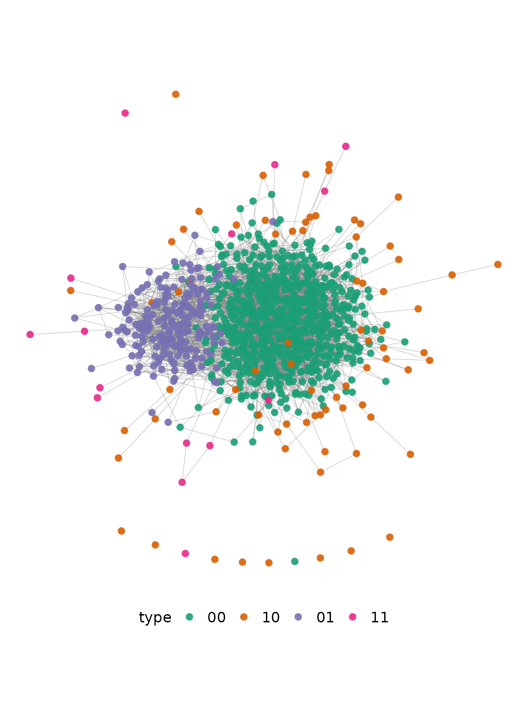

Install and load packages
install.packages("DeclareDesign")
install.packages("igraph")
devtools::install_github("gerasy1987/hiddenmeta", build_vignettes = TRUE)Step 1. Provide study design features
## STUDY 1
study_1 <-
list(
pop =
list(
handler = get_study_population,
# network structure setup
network_handler = sim_block_network,
network_handler_args =
list(N = 1000, K = 2, prev_K = c(known = .3, hidden = .1), rho_K = 0,
p_edge_within = list(known = c(0.1, 0.3), hidden = c(0.1, 0.3)),
p_edge_between = list(known = 0.1, hidden = 0.1),
directed = FALSE),
# groups
group_names = c("known", "hidden"),
# probability of visibility (show-up) for each group
p_visible = list(known = 1, hidden = 1),
# probability of service utilization in hidden population
# for service multiplier
add_groups =
list(service_use = "rbinom(n(), 1, 0.25)",
"purrr::map_df(hidden, ~ sapply( `names<-`(rep(0, times = 10), paste0('loc_', 1:10)), function(add) rbinom(length(.x), 1, 0.1 + .x * add)))",
known_2 = 0.3, known_3 = 0.3)
),
sample =
list(
rds = list(handler = sample_rds,
# RDS parameters
sampling_variable = "rds",
hidden_var = "hidden", # default
n_seed = 20,
n_coupons = 3,
add_seeds = 3,
target_type = "sample",
target_n_rds = 60),
tls = list(handler = sample_tls,
sampling_variable = "tls",
# TLS sampling parameters
target_n_clusters = 4,
target_n_tls = 180,
cluster = paste0("loc_", 1:10)),
pps = list(handler = sample_pps,
sampling_variable = "pps",
# prop sampling parameters
sampling_frame = NULL,
strata = NULL,
cluster = NULL,
target_n_pps = 200)
),
inquiries = list(handler = get_study_estimands,
known_pattern = "^known$",
hidden_var = "hidden"),
estimators =
list(
rds =
list(sspse = list(handler = get_study_est_sspse,
prior_mean = 100,
mcmc_params = list(interval = 5, burnin = 2000, samplesize = 500),
total = 1000,
rds_prefix = "rds",
label = "rds_sspse"),
chords = list(handler = get_study_est_chords,
type = "mle",
seed_condition = "rds_from == -999",
n_boot = 100,
rds_prefix = "rds",
label = "rds_chords"),
multiplier = list(handler = get_study_est_multiplier,
service_var = "service_use",
seed_condition = "rds_from == -999",
n_boot = 100,
rds_prefix = "rds",
label = "rds_multi")),
tls =
list(ht = list(handler = get_study_est_ht,
weight_var = "tls_weight",
prefix = "tls",
label = "tls_ht"),
nsum = list(handler = get_study_est_nsum,
known = c("known", "known_2", "known_3"),
hidden = "hidden_visible_out",
survey_design = ~ tls_cluster,
n_boot = 100,
prefix = "tls",
label = "tls_nsum"),
recap = list(handler = get_study_est_recapture,
capture_parse =
"strsplit(x = unique(na.omit(tls_locs_sampled)), split = ';')[[1]]",
sample_condition = "tls == 1",
model = "Mt",
hidden_variable = "hidden",
label = "tls_recap")),
pps =
list(ht = list(handler = get_study_est_ht,
prefix = "pps",
label = "pps_ht"),
nsum = list(handler = get_study_est_nsum,
known = c("known", "known_2", "known_3"),
hidden = "hidden_visible_out",
survey_design = ~ pps_cluster + strata(pps_strata),
n_boot = 100,
prefix = "pps",
label = "pps_nsum")),
all =
list(recap1 = list(handler = get_study_est_recapture,
capture_vars = c("rds", "pps"),
model = "Mt",
hidden_variable = "hidden",
label = "rds_pps_recap"),
recap2 = list(handler = get_study_est_recapture,
capture_vars = c("rds"),
capture_parse =
"strsplit(x = unique(na.omit(tls_locs_sampled)), split = ';')[[1]]",
model = "Mt",
hidden_variable = "hidden",
label = "rds_tls_recap"))
)
)Step 2. Declare study population
study_population <-
eval(as.call(c(list(declare_population), study_1$pop)))
set.seed(872312)
example_pop <- study_population()
example_pop %>%
dplyr::sample_n(n())
#> # A tibble: 1,000 × 75
#> name type known hidden links service_use loc_1 loc_2 loc_3 loc_4 loc_5
#> <int> <chr> <int> <int> <chr> <int> <int> <int> <int> <int> <int>
#> 1 583 00 0 0 215;310;6… 0 0 0 0 0 0
#> 2 140 00 0 0 19;53;437… 1 0 0 0 0 0
#> 3 670 10 1 0 1;90;103;… 0 0 0 0 0 0
#> 4 218 00 0 0 102;280;8… 1 0 0 0 0 0
#> 5 97 00 0 0 139;198;2… 0 0 0 1 0 0
#> 6 99 00 0 0 16;95;244… 0 0 1 0 0 0
#> 7 116 00 0 0 62;88;127… 1 0 0 0 0 0
#> 8 899 10 1 0 168;191;4… 1 0 0 1 0 0
#> 9 753 10 1 0 40;288;41… 1 0 0 0 0 0
#> 10 845 10 1 0 304;448;5… 1 0 0 0 0 0
#> # … with 990 more rows, and 64 more variables: loc_6 <int>, loc_7 <int>,
#> # loc_8 <int>, loc_9 <int>, loc_10 <int>, known_2 <int>, known_3 <int>,
#> # n_visible_out <dbl>, known_visible_out <dbl>, hidden_visible_out <dbl>,
#> # type_00_visible_out <dbl>, type_01_visible_out <dbl>,
#> # type_10_visible_out <dbl>, type_11_visible_out <dbl>,
#> # service_use_visible_out <dbl>, loc_1_visible_out <dbl>,
#> # loc_2_visible_out <dbl>, loc_3_visible_out <dbl>, …Show the network
g <-
example_pop %$% {
hiddenmeta:::retrieve_graph(links) %>%
igraph::set_vertex_attr("name", value = name) %>%
igraph::set_vertex_attr("type", value = type)
}
igraph::V(g)$color <-
plyr::mapvalues(igraph::V(g)$type,
from = unique(igraph::V(g)$type),
to = grDevices::palette.colors(n = length(unique(igraph::V(g)$type)),
palette = "Set 3"))
plot(g,
# layout = igraph::layout_on_grid(g, dim = 2, width = 100),
layout = igraph::layout_on_grid(g, dim = 2, width = 150),
vertex.size = 1.5, vertex.dist = 4, vertex.label = NA, edge.width = .2,
edge.arrow.size = .2, edge.curved = .2)
legend(x = -1, y = -1.2,
legend = c("none", "known only", "hidden only", "both"),
pt.bg = grDevices::palette.colors(n = length(unique(igraph::V(g)$type)), palette = "Set 3"),
pch = 21, col = "#777777", pt.cex = 1, cex = 1, bty = "o", ncol = 2)
Step 3. Declare all relevant study sampling procedures
The sampling procedures are additive in a sense that each procedure appends several columns relevant to the sampling procedure and particular draw based on population simulation, but does not change the study population data frame (unless you specify drop_nonsampled = TRUE).
study_sample_rds <-
eval(as.call(c(list(declare_sampling), study_1$sample$rds)))
set.seed(872312)
draw_data(study_population + study_sample_rds) %>%
dplyr::sample_n(n())
#> # A tibble: 1,000 × 84
#> name type known hidden links service_use loc_1 loc_2 loc_3 loc_4 loc_5
#> <int> <chr> <int> <int> <chr> <int> <int> <int> <int> <int> <int>
#> 1 6 00 0 0 207;243;3… 0 0 0 0 0 0
#> 2 100 00 0 0 253;364;5… 1 0 0 0 0 0
#> 3 502 00 0 0 59;183;19… 0 0 0 0 0 0
#> 4 741 10 1 0 178;256;3… 0 0 0 0 0 0
#> 5 971 11 1 1 16;46;75;… 0 0 1 0 0 0
#> 6 102 00 0 0 56;63;78;… 0 0 0 0 0 0
#> 7 204 00 0 0 34;85;219… 0 0 0 0 0 0
#> 8 764 10 1 0 215;250;6… 1 0 0 0 1 0
#> 9 193 00 0 0 10;20;208… 1 0 1 0 0 0
#> 10 523 00 0 0 1;176;205… 1 0 0 0 0 0
#> # … with 990 more rows, and 73 more variables: loc_6 <int>, loc_7 <int>,
#> # loc_8 <int>, loc_9 <int>, loc_10 <int>, known_2 <int>, known_3 <int>,
#> # n_visible_out <dbl>, known_visible_out <dbl>, hidden_visible_out <dbl>,
#> # type_00_visible_out <dbl>, type_01_visible_out <dbl>,
#> # type_10_visible_out <dbl>, type_11_visible_out <dbl>,
#> # service_use_visible_out <dbl>, loc_1_visible_out <dbl>,
#> # loc_2_visible_out <dbl>, loc_3_visible_out <dbl>, …
study_sample_pps <-
eval(as.call(c(list(declare_sampling), study_1$sample$pps)))
set.seed(872312)
draw_data(study_population + study_sample_rds + study_sample_pps) %>%
dplyr::sample_n(n())
#> # A tibble: 1,000 × 92
#> name type known hidden links service_use loc_1 loc_2 loc_3 loc_4 loc_5
#> <int> <chr> <int> <int> <chr> <int> <int> <int> <int> <int> <int>
#> 1 171 00 0 0 216;217;5… 0 0 0 0 0 0
#> 2 214 00 0 0 29;114;12… 0 0 1 0 0 0
#> 3 589 00 0 0 36;845;858 0 0 0 0 0 0
#> 4 561 00 0 0 10;187;29… 0 0 0 0 0 0
#> 5 909 01 0 1 60;75;95;… 0 0 0 0 1 0
#> 6 682 10 1 0 55;157;16… 1 0 0 0 0 0
#> 7 421 00 0 0 83;268;44… 1 0 0 0 0 0
#> 8 347 00 0 0 315;337;3… 0 0 0 0 0 0
#> 9 595 00 0 0 43;48;50;… 1 0 0 0 0 0
#> 10 847 10 1 0 35;77;136… 0 0 0 0 0 0
#> # … with 990 more rows, and 81 more variables: loc_6 <int>, loc_7 <int>,
#> # loc_8 <int>, loc_9 <int>, loc_10 <int>, known_2 <int>, known_3 <int>,
#> # n_visible_out <dbl>, known_visible_out <dbl>, hidden_visible_out <dbl>,
#> # type_00_visible_out <dbl>, type_01_visible_out <dbl>,
#> # type_10_visible_out <dbl>, type_11_visible_out <dbl>,
#> # service_use_visible_out <dbl>, loc_1_visible_out <dbl>,
#> # loc_2_visible_out <dbl>, loc_3_visible_out <dbl>, …
study_sample_tls <-
eval(as.call(c(list(declare_sampling), study_1$sample$tls)))
set.seed(872312)
draw_data(study_population +
study_sample_rds + study_sample_pps + study_sample_tls) %>%
dplyr::sample_n(n())
#> # A tibble: 1,000 × 97
#> name type known hidden links service_use loc_1 loc_2 loc_3 loc_4 loc_5
#> <int> <chr> <int> <int> <chr> <int> <int> <int> <int> <int> <int>
#> 1 744 10 1 0 38;81;95;… 0 0 0 0 0 0
#> 2 574 00 0 0 93;120;19… 0 0 0 0 0 0
#> 3 278 00 0 0 182;226;3… 1 0 0 0 0 0
#> 4 798 10 1 0 10;408;44… 0 0 0 0 0 0
#> 5 318 00 0 0 65;98;133… 0 0 0 0 0 0
#> 6 526 00 0 0 181;267;2… 0 0 0 0 0 0
#> 7 512 00 0 0 47;405;72… 0 1 0 0 0 0
#> 8 682 10 1 0 55;157;16… 1 0 0 0 0 0
#> 9 556 00 0 0 362;413;5… 1 0 0 0 0 0
#> 10 656 10 1 0 12;464;46… 1 0 0 0 0 0
#> # … with 990 more rows, and 86 more variables: loc_6 <int>, loc_7 <int>,
#> # loc_8 <int>, loc_9 <int>, loc_10 <int>, known_2 <int>, known_3 <int>,
#> # n_visible_out <dbl>, known_visible_out <dbl>, hidden_visible_out <dbl>,
#> # type_00_visible_out <dbl>, type_01_visible_out <dbl>,
#> # type_10_visible_out <dbl>, type_11_visible_out <dbl>,
#> # service_use_visible_out <dbl>, loc_1_visible_out <dbl>,
#> # loc_2_visible_out <dbl>, loc_3_visible_out <dbl>, …Step 4. Declare study level estimands
study_estimands <-
eval(as.call(c(list(declare_inquiry), study_1$inquiries)))
set.seed(872312)
draw_estimands(study_population +
# study_sample_rds + study_sample_pps + study_sample_tls +
study_estimands)
#> inquiry estimand
#> 1 known_size 318.0000000
#> 2 hidden_size 100.0000000
#> 3 known_prev 0.3180000
#> 4 hidden_prev 0.1000000
#> 5 hidden_size_in_known 38.0000000
#> 6 hidden_prev_in_known 0.1194969Step 5. Declare estimators used in the study
est_sspse <-
eval(as.call(c(list(declare_estimator), study_1$estimators$rds$sspse)))
est_chords <-
eval(as.call(c(list(declare_estimator), study_1$estimators$rds$chords)))
est_multi <-
eval(as.call(c(list(declare_estimator), study_1$estimators$rds$multiplier)))
est_ht_pps <-
eval(as.call(c(list(declare_estimator), study_1$estimators$pps$ht)))
est_nsum_pps <-
eval(as.call(c(list(declare_estimator), study_1$estimators$pps$nsum)))
est_ht_tls <-
eval(as.call(c(list(declare_estimator), study_1$estimators$tls$ht)))
est_nsum_tls <-
eval(as.call(c(list(declare_estimator), study_1$estimators$tls$nsum)))
est_recap_tls <-
eval(as.call(c(list(declare_estimator), study_1$estimators$tls$recap)))
est_recap_rds_pps <-
eval(as.call(c(list(declare_estimator), study_1$estimators$all$recap1)))
est_recap_rds_tls <-
eval(as.call(c(list(declare_estimator), study_1$estimators$all$recap2)))
set.seed(872312)
draw_estimates(study_population +
study_sample_rds + study_sample_pps + study_sample_tls +
study_estimands +
est_sspse + est_chords + est_multi +
est_nsum_pps + est_ht_pps +
est_nsum_tls + est_ht_tls + est_recap_tls +
est_recap_rds_pps + est_recap_rds_tls)
#> estimator estimate se inquiry
#> 1 hidden_size_rds_sspse 104.00000 2.630451e+01 hidden_size
#> 2 hidden_size_rds_chords 37.00000 2.404814e+01 hidden_size
#> 3 hidden_size_rds_multi 104.00000 2.932858e+01 hidden_size
#> 4 hidden_size_pps_nsum 101.81782 6.319471e+00 hidden_size
#> 5 hidden_size_pps_ht 85.00000 1.985434e+01 hidden_size
#> 6 hidden_prev_pps_ht 0.08500 1.985434e-02 hidden_prev
#> 7 hidden_size_tls_nsum 106.10675 2.365163e+00 hidden_size
#> 8 hidden_size_tls_ht 4.03000 8.516056e-01 hidden_size
#> 9 hidden_prev_tls_ht 0.00403 8.516056e-04 hidden_prev
#> 10 hidden_size_tls_recap 51.07147 2.145948e+01 hidden_size
#> 11 hidden_size_rds_pps_recap 98.81818 1.626866e+01 hidden_size
#> 12 hidden_size_rds_tls_recap 98.83460 9.774056e+00 hidden_sizeStep 6. Declare full study
study1 <-
study_population +
study_sample_rds + study_sample_pps + study_sample_tls +
study_estimands +
est_sspse + est_chords + est_multi +
est_nsum_pps + est_ht_pps +
est_nsum_tls + est_ht_tls + est_recap_tls +
est_recap_rds_pps + est_recap_rds_tls
# can draw one of the samples
study1$study_sample_rds(study1$study_population())
#> # A tibble: 1,000 × 84
#> name type known hidden links service_use loc_1 loc_2 loc_3 loc_4 loc_5
#> <int> <chr> <int> <int> <chr> <int> <int> <int> <int> <int> <int>
#> 1 1 00 0 0 11;136;41… 0 0 0 0 0 1
#> 2 2 00 0 0 88;181;24… 0 0 0 1 0 0
#> 3 3 00 0 0 41;82;260… 1 0 0 0 0 0
#> 4 4 00 0 0 24;212;61… 0 0 0 0 0 0
#> 5 5 00 0 0 43;69;72;… 0 1 0 0 0 0
#> 6 6 00 0 0 53;561;60… 1 0 0 0 1 0
#> 7 7 00 0 0 101;177;2… 0 0 0 0 0 0
#> 8 8 00 0 0 11;157;33… 0 0 0 0 0 1
#> 9 9 00 0 0 14;311;35… 0 0 0 0 0 0
#> 10 10 00 0 0 30;161;21… 0 0 0 0 0 1
#> # … with 990 more rows, and 73 more variables: loc_6 <int>, loc_7 <int>,
#> # loc_8 <int>, loc_9 <int>, loc_10 <int>, known_2 <int>, known_3 <int>,
#> # n_visible_out <dbl>, known_visible_out <dbl>, hidden_visible_out <dbl>,
#> # type_00_visible_out <dbl>, type_01_visible_out <dbl>,
#> # type_10_visible_out <dbl>, type_11_visible_out <dbl>,
#> # service_use_visible_out <dbl>, loc_1_visible_out <dbl>,
#> # loc_2_visible_out <dbl>, loc_3_visible_out <dbl>, …
# can draw full data
study1_data <- draw_data(study1)
# can draw estimands
study1$inquiry(study1_data)
#> inquiry estimand
#> 1 known_size 313.00000000
#> 2 hidden_size 95.00000000
#> 3 known_prev 0.31300000
#> 4 hidden_prev 0.09500000
#> 5 hidden_size_in_known 22.00000000
#> 6 hidden_prev_in_known 0.07028754
# can draw any of the estimators
study1$rds_sspse(study1_data)
#> estimator estimate se inquiry
#> 1 hidden_size_rds_sspse 150.5 92.57726 hidden_size
study1$pps_ht(study1_data)
#> estimator estimate se inquiry
#> 1 hidden_size_pps_ht 110.00 23.66712443 hidden_size
#> 2 hidden_prev_pps_ht 0.11 0.02366712 hidden_prev
study1$rds_pps_recap(study1_data)
#> estimator estimate se inquiry
#> 1 hidden_size_rds_pps_recap 92.53333 11.97572 hidden_sizeStep 7. Diagnose study design
requireNamespace(c("doParallel", "parallel"))
doParallel::registerDoParallel(cores = 7)
set.seed(872312)
study1_simulations <-
plyr::llply(
as.list(1:100),
.fun = function(x) {
base::suppressWarnings(
DeclareDesign::simulate_design(study1, sims = 1) %>%
dplyr::mutate(
sim_ID = x
)
)
},
.parallel = TRUE
) %>%
dplyr::bind_rows()
saveRDS(study1_simulations, "vignettes/study1_sim.rds")
study_diagnosands <-
declare_diagnosands(
mean_estimand = mean(estimand),
mean_estimate = mean(estimate),
sd_estimate = sd(estimate),
mean_se = mean(se),
bias = mean(estimate - estimand),
rmse = sqrt(mean((estimate - estimand) ^ 2))
)
study1_simulations <- readRDS(here::here("vignettes/study1_sim.rds"))
diagnose_design(simulations_df = study1_simulations,
diagnosands = study_diagnosands) %>%
reshape_diagnosis %>% select(-'Design')
#> Inquiry Estimator N Sims Mean Estimand
#> 1 hidden_prev hidden_prev_pps_ht 100 0.10
#> 2 (0.00)
#> 3 hidden_prev hidden_prev_tls_ht 100 0.10
#> 4 (0.00)
#> 5 hidden_prev_in_known <NA> 100 0.09
#> 6 (0.00)
#> 7 hidden_size hidden_size_pps_ht 100 95.17
#> 8 (0.57)
#> 9 hidden_size hidden_size_pps_nsum 100 95.17
#> 10 (0.57)
#> 11 hidden_size hidden_size_rds_chords 100 95.17
#> 12 (0.57)
#> 13 hidden_size hidden_size_rds_multi 100 95.17
#> 14 (0.57)
#> 15 hidden_size hidden_size_rds_pps_recap 100 95.17
#> 16 (0.57)
#> 17 hidden_size hidden_size_rds_sspse 100 95.17
#> 18 (0.57)
#> 19 hidden_size hidden_size_rds_tls_recap 100 95.17
#> 20 (0.57)
#> 21 hidden_size hidden_size_tls_ht 100 95.17
#> 22 (0.57)
#> 23 hidden_size hidden_size_tls_nsum 100 95.17
#> 24 (0.57)
#> 25 hidden_size hidden_size_tls_recap 100 95.17
#> 26 (0.57)
#> 27 hidden_size_in_known <NA> 100 27.35
#> 28 (0.34)
#> 29 known_prev <NA> 100 0.30
#> 30 (0.00)
#> 31 known_size <NA> 100 301.35
#> 32 (0.97)
#> Mean Estimate SD Estimate Mean Se Bias RMSE
#> 1 0.11 0.03 0.02 0.01 0.03
#> 2 (0.00) (0.00) (0.00) (0.00) (0.00)
#> 3 0.00 0.00 0.00 -0.09 0.09
#> 4 (0.00) (0.00) (0.00) (0.00) (0.00)
#> 5 NA NA NA NA NA
#> 6 NA NA NA NA NA
#> 7 106.50 28.15 21.77 11.33 27.10
#> 8 (2.75) (2.32) (0.27) (2.45) (2.18)
#> 9 99.37 12.57 6.71 4.20 9.68
#> 10 (1.14) (1.04) (0.07) (0.76) (0.72)
#> 11 77.37 38.38 35.41 -17.80 43.65
#> 12 (3.95) (2.28) (0.81) (4.10) (1.92)
#> 13 91.42 13.31 23.72 -3.75 13.59
#> 14 (1.39) (1.17) (1.02) (1.39) (0.98)
#> 15 101.07 19.64 15.32 5.90 17.13
#> 16 (1.90) (1.40) (0.60) (1.62) (1.28)
#> 17 159.71 32.63 92.65 64.54 72.41
#> 18 (3.03) (4.67) (3.82) (3.04) (4.44)
#> 19 98.38 11.34 10.23 3.21 11.04
#> 20 (1.23) (0.78) (0.29) (1.12) (0.83)
#> 21 3.43 1.15 0.90 -91.74 91.91
#> 22 (0.11) (0.07) (0.02) (0.53) (0.54)
#> 23 98.73 14.26 7.60 3.56 11.03
#> 24 (1.53) (1.10) (0.31) (1.14) (0.86)
#> 25 33.72 15.29 13.19 -61.45 63.34
#> 26 (1.76) (3.00) (1.54) (1.70) (1.25)
#> 27 NA NA NA NA NA
#> 28 NA NA NA NA NA
#> 29 NA NA NA NA NA
#> 30 NA NA NA NA NA
#> 31 NA NA NA NA NA
#> 32 NA NA NA NA NAMulti study declaration
Additional study
study_2 <-
list(
pop =
list(
handler = get_study_population,
network_handler = sim_block_network,
network_handler_args =
list(N = 5000, K = 3,
prev_K = c(frame = .5, known = .2, hidden = .1),
rho_K = c(.05, .05, .05),
p_edge_within = list(frame = c(0.05, 0.05),
known = c(0.1, 0.05),
hidden = c(0.2, 0.9)),
p_edge_between = list(frame = 0.05,
known = 0.1,
hidden = 0.01),
directed = FALSE),
group_names = c("frame", "known", "hidden"),
# probability of visibility (show-up) for each group
p_visible = list(frame = 1, known = 1, hidden = .6),
# probability of service utilization in hidden population
# for service multiplier
add_groups =
list(service_use = "rbinom(n(), 1, 0.25 + hidden * 0.3)",
"purrr::map_df(hidden, ~ sapply( `names<-`(runif(10, 0.05,.3), paste0('loc_', 1:10)), function(add) rbinom(length(.x), 1, 0.1 + .x * add)))",
known_2 = 0.1, known_3 = 0.2)
),
sample =
list(
rds = list(handler = sample_rds,
# RDS parameters
sampling_variable = "rds",
hidden_var = "hidden",
n_seed = 100,
n_coupons = 3,
target_type = "waves",
target_n_rds = 2),
tls = list(handler = sample_tls,
sampling_variable = "tls",
# TLS sampling parameters
target_n_clusters = 4,
target_n_tls = 300,
cluster = paste0("loc_", 1:8)),
pps = list(handler = sample_pps,
sampling_variable = "pps",
# prop sampling parameters
sampling_frame = "frame",
strata = NULL,
cluster = NULL,
target_n_pps = 800)
),
inquiries = list(handler = get_study_estimands,
known_pattern = "^known$|^frame$",
hidden_var = "hidden"),
estimators =
list(
rds =
list(sspse = list(handler = get_study_est_sspse,
label = "rds_sspse",
prior_mean = 450,
mcmc_params = list(interval = 5, burnin = 2000, samplesize = 500),
total = 5000,
rds_prefix = "rds"),
chords = list(handler = get_study_est_chords,
type = "mle",
label = "rds_chords",
seed_condition = "rds_from == -999",
n_boot = 100,
rds_prefix = "rds"),
multiplier = list(handler = get_study_est_multiplier,
service_var = "service_use",
seed_condition = "rds_from == -999",
n_boot = 100,
rds_prefix = "rds",
label = "rds_multi")),
tls =
list(ht = list(handler = get_study_est_ht,
weight_var = "tls_weight",
prefix = "tls",
label = "tls_ht"),
nsum = list(handler = get_study_est_nsum,
known = c("known", "frame"),
hidden = "hidden_visible_out",
survey_design = ~ tls_cluster,
n_boot = 100,
prefix = "tls",
label = "tls_nsum"),
recap = list(handler = get_study_est_recapture,
capture_vars = paste0("loc_", 1:8),
sample_condition = "tls == 1",
model = "Mt",
hidden_variable = "hidden",
label = "tls_recap")),
pps =
list(
ht = list(handler = get_study_est_ht,
label = "pps_ht"),
nsum = list(handler = get_study_est_nsum,
known = c("frame", "known"),
hidden = "hidden_visible_out",
survey_design = ~ pps_cluster + strata(pps_strata),
n_boot = 100,
label = "pps_nsum")),
all =
list(recap1 = list(handler = get_study_est_recapture,
capture_vars = c("rds", "pps"),
model = "Mt",
hidden_variable = "hidden",
label = "rds_pps_recap"),
recap2 = list(handler = get_study_est_recapture,
capture_vars = c("rds", paste0("loc_", 1:8)),
model = "Mt",
hidden_variable = "hidden",
label = "rds_tls_recap"))
)
)
study_3 <-
list(
pop =
list(
handler = get_study_population,
# network structure setup
network_handler = sim_block_network,
network_handler_args =
list(N = 2000, K = 2, prev_K = c(known = .3, hidden = .1), rho_K = .3,
p_edge_within = list(known = c(0.05, 0.1), hidden = c(0.05, 0.7)),
p_edge_between = list(known = 0.05, hidden = 0.05),
directed = FALSE),
# groups
group_names = c("known", "hidden"),
# probability of visibility (show-up) for each group
p_visible = list(known = 1, hidden = .7),
# probability of service utilization in hidden population
# for service multiplier
add_groups =
list(service_use = "rbinom(n(), 1, 0.25 + hidden * 0.05)",
"purrr::map_df(hidden, ~ sapply( `names<-`(c(.2, .1, .3, .2), paste0('loc_', 1:4)), function(add) rbinom(length(.x), 1, 0.1 + .x * add)))",
known_2 = 0.1, known_3 = 0.2)
),
sample =
list(
rds = list(handler = sample_rds,
# RDS parameters
sampling_variable = "rds",
hidden_var = "hidden", # default
n_seed = 20,
n_coupons = 3,
target_type = "sample",
target_n_rds = 100),
tls = list(handler = sample_tls,
sampling_variable = "tls",
# TLS sampling parameters
target_n_clusters = 3,
target_n_tls = 300,
cluster = paste0("loc_", 1:4)),
pps = list(handler = sample_pps,
sampling_variable = "pps",
# prop sampling parameters
sampling_frame = NULL,
strata = NULL,
cluster = NULL,
target_n_pps = 400)
),
inquiries = list(handler = get_study_estimands,
known_pattern = "^known$",
hidden_var = "hidden"),
estimators =
list(
rds =
list(sspse = list(handler = get_study_est_sspse,
prior_mean = 200,
mcmc_params = list(interval = 5, burnin = 2000, samplesize = 500),
total = 2000,
rds_prefix = "rds",
label = "rds_sspse"),
chords = list(handler = get_study_est_chords,
type = "mle",
seed_condition = "rds_from == -999",
n_boot = 100,
rds_prefix = "rds",
label = "rds_chords"),
multiplier = list(handler = get_study_est_multiplier,
service_var = "service_use",
seed_condition = "rds_from == -999",
n_boot = 100,
rds_prefix = "rds",
label = "rds_multi")),
tls =
list(ht = list(handler = get_study_est_ht,
weight_var = "tls_weight",
prefix = "tls",
label = "tls_ht"),
nsum = list(handler = get_study_est_nsum,
known = c("known", "known_2", "known_3"),
hidden = "hidden_visible_out",
survey_design = ~ tls_cluster,
n_boot = 100,
prefix = "tls",
label = "tls_nsum"),
recap = list(handler = get_study_est_recapture,
capture_vars = paste0("loc_", 1:4),
sample_condition = "tls == 1",
model = "Mt",
hidden_variable = "hidden",
label = "tls_recap")),
pps =
list(ht = list(handler = get_study_est_ht,
prefix = "pps",
label = "pps_ht"),
nsum = list(handler = get_study_est_nsum,
known = c("known", "known_2", "known_3"),
hidden = "hidden_visible_out",
survey_design = ~ pps_cluster + strata(pps_strata),
n_boot = 100,
prefix = "pps",
label = "pps_nsum")),
all =
list(recap1 = list(handler = get_study_est_recapture,
capture_vars = c("rds", "pps"),
model = "Mt",
hidden_variable = "hidden",
label = "rds_pps_recap"),
recap2 = list(handler = get_study_est_recapture,
capture_vars = c("rds", paste0("loc_", 1:4)),
model = "Mt",
hidden_variable = "hidden",
label = "rds_tls_recap"))
)
)Declare multiple studies
multi_population <-
declare_population(handler = get_multi_populations,
pops_args = list(study_1 = study_1$pop,
study_2 = study_2$pop,
study_3 = study_3$pop))
multi_sampling <-
declare_sampling(handler = get_multi_samples,
samples_args = list(study_1 = study_1$sample,
study_2 = study_2$sample,
study_3 = study_3$sample))
multi_inquiry <-
declare_inquiry(handler = get_multi_estimands,
inquiries_args = list(study_1 = study_1$inquiries,
study_2 = study_2$inquiries,
study_3 = study_3$inquiries))
multi_estimators <-
declare_estimator(handler = get_multi_estimates,
estimators_args = list(study_1 = study_1$estimators,
study_2 = study_2$estimators,
study_3 = study_3$estimators))
multi_study <- multi_population + multi_sampling + multi_inquiry + multi_estimators
set.seed(872312)
draw_estimands(multi_study)
#> inquiry estimand
#> 1 study_1_known_size 318.0000000
#> 2 study_1_hidden_size 100.0000000
#> 3 study_1_known_prev 0.3180000
#> 4 study_1_hidden_prev 0.1000000
#> 5 study_1_hidden_size_in_known 38.0000000
#> 6 study_1_hidden_prev_in_known 0.1194969
#> 7 study_2_frame_size 2521.0000000
#> 8 study_2_known_size 955.0000000
#> 9 study_2_hidden_size 481.0000000
#> 10 study_2_frame_prev 0.5042000
#> 11 study_2_known_prev 0.1910000
#> 12 study_2_hidden_prev 0.0962000
#> 13 study_2_hidden_size_in_frame 269.0000000
#> 14 study_2_hidden_prev_in_frame 0.1067037
#> 15 study_2_hidden_size_in_known 114.0000000
#> 16 study_2_hidden_prev_in_known 0.1193717
#> 17 study_3_known_size 590.0000000
#> 18 study_3_hidden_size 211.0000000
#> 19 study_3_known_prev 0.2950000
#> 20 study_3_hidden_prev 0.1055000
#> 21 study_3_hidden_size_in_known 145.0000000
#> 22 study_3_hidden_prev_in_known 0.2457627
draw_estimates(multi_study)
#> estimator estimate se inquiry
#> 1 hidden_size_rds_sspse 1.605000e+02 9.753111e+01 study_1_hidden_size
#> 2 hidden_size_rds_chords 7.800000e+01 2.823870e+01 study_1_hidden_size
#> 3 hidden_size_rds_multi 1.309091e+02 6.454313e+01 study_1_hidden_size
#> 4 hidden_size_tls_ht 4.211009e+00 9.546678e-01 study_1_hidden_size
#> 5 hidden_prev_tls_ht 4.211009e-03 9.546678e-04 study_1_hidden_prev
#> 6 hidden_size_tls_nsum 1.064848e+02 3.886880e+00 study_1_hidden_size
#> 7 hidden_size_tls_recap 6.589780e+01 2.827999e+01 study_1_hidden_size
#> 8 hidden_size_pps_ht 8.000000e+01 1.908098e+01 study_1_hidden_size
#> 9 hidden_prev_pps_ht 8.000000e-02 1.908098e-02 study_1_hidden_prev
#> 10 hidden_size_pps_nsum 1.166672e+02 7.370442e+00 study_1_hidden_size
#> 11 hidden_size_rds_pps_recap 7.876923e+01 9.173448e+00 study_1_hidden_size
#> 12 hidden_size_rds_tls_recap 1.330891e+02 1.584432e+01 study_1_hidden_size
#> 13 hidden_size_rds_sspse 4.455000e+02 5.135585e+02 study_2_hidden_size
#> 14 hidden_size_rds_chords 3.620000e+02 1.183849e+02 study_2_hidden_size
#> 15 hidden_size_rds_multi 5.552211e+02 3.551113e+01 study_2_hidden_size
#> 16 hidden_size_tls_ht 4.931919e+01 2.278566e+01 study_2_hidden_size
#> 17 hidden_prev_tls_ht 9.863838e-03 4.557133e-03 study_2_hidden_prev
#> 18 hidden_size_tls_nsum 7.399762e+02 7.900043e+01 study_2_hidden_size
#> 19 hidden_size_tls_recap 6.572491e+01 1.844387e+00 study_2_hidden_size
#> 20 hidden_size_pps_ht 2.574800e+02 2.704909e+01 study_2_hidden_size
#> 21 hidden_prev_pps_ht 5.149600e-02 5.409819e-03 study_2_hidden_prev
#> 22 hidden_size_pps_nsum 2.076163e+02 2.668073e+01 study_2_hidden_size
#> 23 hidden_size_rds_pps_recap 3.982973e+02 4.291845e+01 study_2_hidden_size
#> 24 hidden_size_rds_tls_recap 5.512353e+02 6.314687e+00 study_2_hidden_size
#> 25 hidden_size_rds_sspse 2.020000e+02 5.785078e+01 study_3_hidden_size
#> 26 hidden_size_rds_chords 1.240000e+02 4.652596e+01 study_3_hidden_size
#> 27 hidden_size_rds_multi 1.538462e+02 1.871419e+01 study_3_hidden_size
#> 28 hidden_size_tls_ht 3.246111e+01 4.537535e+00 study_3_hidden_size
#> 29 hidden_prev_tls_ht 1.623056e-02 2.268767e-03 study_3_hidden_prev
#> 30 hidden_size_tls_nsum 4.402019e+02 2.846223e+01 study_3_hidden_size
#> 31 hidden_size_tls_recap 6.692381e+01 4.172684e+00 study_3_hidden_size
#> 32 hidden_size_pps_ht 1.950000e+02 2.857143e+01 study_3_hidden_size
#> 33 hidden_prev_pps_ht 9.750000e-02 1.428571e-02 study_3_hidden_prev
#> 34 hidden_size_pps_nsum 2.901978e+02 1.988183e+01 study_3_hidden_size
#> 35 hidden_size_rds_pps_recap 2.010000e+02 2.791313e+01 study_3_hidden_size
#> 36 hidden_size_rds_tls_recap 1.791636e+02 5.769427e+00 study_3_hidden_sizeDiagnose multiple studies
# multi_simulations <- simulate_design(multi_study, sims = 2)
requireNamespace(c("doParallel", "parallel"))
doParallel::registerDoParallel(cores = 20)
set.seed(872312)
multi_simulations <-
plyr::llply(
as.list(1:100),
.fun = function(x) {
base::suppressWarnings(
DeclareDesign::simulate_design(multi_study, sims = 1) %>%
dplyr::mutate(
sim_ID = x
)
)
},
.parallel = TRUE
) %>%
dplyr::bind_rows()
saveRDS(multi_simulations, file = "vignettes/multi_sim.rds")
multi_simulations <- readRDS(here::here("vignettes/multi_sim.rds"))
diagnose_design(simulations_df = multi_simulations,
diagnosands = study_diagnosands) %>%
reshape_diagnosis(digits = 2) %>%
dplyr::select(-'Design') %>%
dplyr::filter(`Mean Estimate` != "NA")
#> Inquiry Estimator N Sims Mean Estimand
#> 1 study_1_hidden_prev hidden_prev_pps_ht 100 0.10
#> 2 (0.00)
#> 3 study_1_hidden_prev hidden_prev_tls_ht 100 0.10
#> 4 (0.00)
#> 5 study_1_hidden_size hidden_size_pps_ht 100 197.97
#> 6 (1.54)
#> 7 study_1_hidden_size hidden_size_pps_nsum 100 197.97
#> 8 (1.54)
#> 9 study_1_hidden_size hidden_size_rds_chords 100 197.97
#> 10 (1.54)
#> 11 study_1_hidden_size hidden_size_rds_multi 100 197.97
#> 12 (1.54)
#> 13 study_1_hidden_size hidden_size_rds_pps_recap 100 197.97
#> 14 (1.54)
#> 15 study_1_hidden_size hidden_size_rds_sspse 100 197.97
#> 16 (1.54)
#> 17 study_1_hidden_size hidden_size_rds_tls_recap 100 197.97
#> 18 (1.54)
#> 19 study_1_hidden_size hidden_size_tls_ht 100 197.97
#> 20 (1.54)
#> 21 study_1_hidden_size hidden_size_tls_nsum 100 197.97
#> 22 (1.54)
#> 23 study_1_hidden_size hidden_size_tls_recap 100 197.97
#> 24 (1.54)
#> 25 study_2_hidden_prev hidden_prev_pps_ht 100 0.10
#> 26 (0.00)
#> 27 study_2_hidden_prev hidden_prev_tls_ht 100 0.10
#> 28 (0.00)
#> 29 study_2_hidden_size hidden_size_pps_ht 100 497.63
#> 30 (1.99)
#> 31 study_2_hidden_size hidden_size_pps_nsum 100 497.63
#> 32 (1.99)
#> 33 study_2_hidden_size hidden_size_rds_chords 100 497.63
#> 34 (1.99)
#> 35 study_2_hidden_size hidden_size_rds_multi 100 497.63
#> 36 (1.99)
#> 37 study_2_hidden_size hidden_size_rds_pps_recap 100 497.63
#> 38 (1.99)
#> 39 study_2_hidden_size hidden_size_rds_sspse 100 497.63
#> 40 (1.99)
#> 41 study_2_hidden_size hidden_size_rds_tls_recap 100 497.63
#> 42 (1.99)
#> 43 study_2_hidden_size hidden_size_tls_ht 100 497.63
#> 44 (1.99)
#> 45 study_2_hidden_size hidden_size_tls_nsum 100 497.63
#> 46 (1.99)
#> 47 study_2_hidden_size hidden_size_tls_recap 100 497.63
#> 48 (1.99)
#> 49 study_3_hidden_prev hidden_prev_pps_ht 100 0.10
#> 50 (0.00)
#> 51 study_3_hidden_prev hidden_prev_tls_ht 100 0.10
#> 52 (0.00)
#> 53 study_3_hidden_size hidden_size_pps_ht 100 198.27
#> 54 (1.19)
#> 55 study_3_hidden_size hidden_size_pps_nsum 100 198.27
#> 56 (1.19)
#> 57 study_3_hidden_size hidden_size_rds_chords 100 198.27
#> 58 (1.19)
#> 59 study_3_hidden_size hidden_size_rds_multi 100 198.27
#> 60 (1.19)
#> 61 study_3_hidden_size hidden_size_rds_pps_recap 100 198.27
#> 62 (1.19)
#> 63 study_3_hidden_size hidden_size_rds_sspse 100 198.27
#> 64 (1.19)
#> 65 study_3_hidden_size hidden_size_rds_tls_recap 100 198.27
#> 66 (1.19)
#> 67 study_3_hidden_size hidden_size_tls_ht 100 198.27
#> 68 (1.19)
#> 69 study_3_hidden_size hidden_size_tls_nsum 100 198.27
#> 70 (1.19)
#> 71 study_3_hidden_size hidden_size_tls_recap 100 198.27
#> 72 (1.19)
#> Mean Estimate SD Estimate Mean Se Bias RMSE
#> 1 0.10 0.02 0.01 -0.00 0.01
#> 2 (0.00) (0.00) (0.00) (0.00) (0.00)
#> 3 0.02 0.00 0.00 -0.08 0.08
#> 4 (0.00) (0.00) (0.00) (0.00) (0.00)
#> 5 193.35 30.89 29.53 -4.62 24.71
#> 6 (3.19) (2.75) (0.30) (2.47) (1.82)
#> 7 279.14 33.59 19.84 81.17 84.20
#> 8 (3.31) (2.42) (0.20) (2.13) (2.24)
#> 9 135.47 49.91 48.94 -62.50 81.34
#> 10 (5.04) (4.47) (0.75) (5.30) (3.52)
#> 11 200.83 27.78 33.30 2.86 24.07
#> 12 (2.93) (2.63) (0.99) (2.57) (2.13)
#> 13 194.08 36.84 26.61 -3.89 33.07
#> 14 (3.97) (6.96) (1.29) (3.46) (5.96)
#> 15 215.03 30.65 86.46 17.06 39.76
#> 16 (3.11) (1.89) (2.35) (3.74) (2.75)
#> 17 198.25 16.19 6.65 0.28 6.98
#> 18 (1.82) (1.16) (0.11) (0.73) (0.48)
#> 19 37.23 5.52 4.41 -160.74 161.37
#> 20 (0.57) (0.30) (0.06) (1.44) (1.42)
#> 21 435.88 40.33 23.04 237.91 240.08
#> 22 (3.85) (2.92) (1.25) (3.11) (3.15)
#> 23 77.38 9.57 4.67 -120.59 121.37
#> 24 (1.07) (0.56) (0.11) (1.29) (1.26)
#> 25 0.06 0.01 0.01 -0.04 0.04
#> 26 (0.00) (0.00) (0.00) (0.00) (0.00)
#> 27 0.01 0.00 0.00 -0.09 0.09
#> 28 (0.00) (0.00) (0.00) (0.00) (0.00)
#> 29 283.39 25.43 27.63 -214.24 215.88
#> 30 (2.58) (1.98) (0.24) (2.51) (2.47)
#> 31 200.92 29.01 25.72 -296.71 297.93
#> 32 (2.94) (2.68) (0.32) (2.53) (2.47)
#> 33 224.92 209.24 146.13 -272.71 341.23
#> 34 (19.99) (21.97) (3.61) (19.48) (12.17)
#> 35 499.94 38.52 34.90 2.31 32.94
#> 36 (3.74) (3.88) (0.54) (3.30) (2.67)
#> 37 502.68 70.65 64.67 5.05 63.82
#> 38 (6.80) (4.82) (1.55) (5.87) (4.34)
#> 39 1412.37 814.71 315.04 914.74 1224.20
#> 40 (82.72) (24.30) (21.86) (82.95) (56.26)
#> 41 497.73 21.68 5.72 0.10 6.26
#> 42 (2.11) (1.83) (0.04) (0.64) (0.44)
#> 43 53.44 6.68 23.24 -444.19 444.64
#> 44 (0.65) (0.57) (0.46) (1.96) (1.98)
#> 45 608.92 102.88 83.07 111.29 145.94
#> 46 (9.05) (6.57) (2.91) (8.43) (6.92)
#> 47 69.10 7.00 1.75 -428.53 429.02
#> 48 (0.70) (0.49) (0.03) (2.00) (2.02)
#> 49 0.10 0.02 0.01 0.00 0.01
#> 50 (0.00) (0.00) (0.00) (0.00) (0.00)
#> 51 0.02 0.00 0.00 -0.08 0.08
#> 52 (0.00) (0.00) (0.00) (0.00) (0.00)
#> 53 203.30 31.00 29.68 5.03 29.88
#> 54 (3.20) (2.16) (0.30) (3.12) (2.10)
#> 55 287.12 30.74 20.04 88.85 92.38
#> 56 (3.07) (2.12) (0.23) (2.58) (2.69)
#> 57 142.37 60.63 46.76 -55.90 82.89
#> 58 (5.84) (3.76) (0.66) (5.93) (3.59)
#> 59 198.45 22.55 33.73 0.18 19.24
#> 60 (2.20) (1.34) (0.73) (1.90) (1.27)
#> 61 194.45 21.97 25.82 -3.82 22.30
#> 62 (2.17) (1.73) (0.66) (2.31) (1.72)
#> 63 211.68 31.73 80.10 13.41 38.70
#> 64 (2.97) (2.27) (2.51) (3.39) (2.46)
#> 65 198.51 14.03 6.55 0.24 6.73
#> 66 (1.36) (1.08) (0.08) (0.59) (0.56)
#> 67 37.88 6.01 4.49 -160.39 160.73
#> 68 (0.56) (0.43) (0.05) (1.10) (1.11)
#> 69 431.78 37.01 20.59 233.51 235.62
#> 70 (3.71) (2.44) (1.08) (3.20) (3.20)
#> 71 77.27 9.46 4.61 -121.00 121.50
#> 72 (0.86) (0.68) (0.08) (1.13) (1.14)Meta-analysis structure
Conduct multi-study design for as many sampling-estimator pairs in each study as possible, then diagnose the multi-study design. Calculate average (across simulations) estimand and bias of sampling-estimator for each of the studies and estimator sampling strategies. These will serve as population we will be drawing population-sampling-estimator triads
-
Estimands include:
- Average estimand by inquiry label (within study)
- Average bias of specific sampling-estimator pair (across studies) compared to truth
- Average relative bias of sampling-estimator pair (across studies) compared to “gold standard”
- Ratio of average bias to costs of sampling-estimator pair
As mentioned before sampling will consist of drawing population-sampling-estimator triads from the population presuming that each study uses at least two sampling strategies at a time
Once we draw sample we use Stan model to estimate study-specific estimands and sampling-estimator specific errors (biases)
We have all parts to conduct the full cycle of meta-analyses
meta_population <-
declare_population(multi_design = multi_study, n_sim = 3, parallel = FALSE,
handler = get_meta_population)
meta_inquiry <-
declare_inquiry(study_estimand = "hidden_size",
samp_est_benchmark = "pps_ht",
handler = get_meta_estimands)
meta_sample <-
declare_sampling(sampling_variable = "meta",
selection_variables = c("sample", "estimator"),
samples_per_study = 2, estimator_per_sample = 3,
force = list(sample = "pps", estimator = "ht"),
handler = get_meta_sample)
meta_estimator <-
declare_estimator(sampling_variable = "meta",
which_estimand = "hidden_size",
benchmark = list(sample = "pps", estimator = "ht"),
parallel = FALSE,
stan_handler = get_meta_stan,
handler = get_meta_estimates)
meta_study <- meta_population + meta_inquiry + meta_sample + meta_estimator
set.seed(872312)
draw_estimands(meta_study)
#> inquiry estimand
#> 1 bias_pps_ht -75.57513889
#> 2 bias_pps_nsum -71.47930727
#> 3 bias_rds_chords -109.55555556
#> 4 bias_rds_multi 6.04333120
#> 5 bias_rds_pps_recap -8.15177122
#> 6 bias_rds_sspse 457.11111111
#> 7 bias_rds_tls_recap 0.93781976
#> 8 bias_sd_pps_ht 123.42649772
#> 9 bias_sd_pps_nsum 214.88331248
#> 10 bias_sd_rds_chords 165.38393973
#> 11 bias_sd_rds_multi 25.86888492
#> 12 bias_sd_rds_pps_recap 34.00018599
#> 13 bias_sd_rds_sspse 710.62768467
#> 14 bias_sd_rds_tls_recap 2.62627507
#> 15 bias_sd_tls_ht 183.36850717
#> 16 bias_sd_tls_nsum 124.44266073
#> 17 bias_sd_tls_recap 195.77162158
#> 18 bias_tls_ht -233.04254045
#> 19 bias_tls_nsum 124.62504782
#> 20 bias_tls_recap -203.36171786
#> 21 rel_bias_pps_ht 1.00000000
#> 22 rel_bias_pps_nsum 0.93688797
#> 23 rel_bias_rds_chords 1.47826256
#> 24 rel_bias_rds_multi -0.05684819
#> 25 rel_bias_rds_pps_recap 0.12822462
#> 26 rel_bias_rds_sspse -5.92939006
#> 27 rel_bias_rds_tls_recap -0.01214965
#> 28 rel_bias_sd_pps_ht 1.00000000
#> 29 rel_bias_sd_pps_nsum 1.75370491
#> 30 rel_bias_sd_rds_chords 1.33026925
#> 31 rel_bias_sd_rds_multi 0.20081032
#> 32 rel_bias_sd_rds_pps_recap 0.27076736
#> 33 rel_bias_sd_rds_sspse 5.96938573
#> 34 rel_bias_sd_rds_tls_recap 0.02078051
#> 35 rel_bias_sd_tls_ht 1.50343075
#> 36 rel_bias_sd_tls_nsum 1.02050114
#> 37 rel_bias_sd_tls_recap 1.60349425
#> 38 rel_bias_tls_ht 3.12801152
#> 39 rel_bias_tls_nsum -1.67607954
#> 40 rel_bias_tls_recap 2.72985805
#> 41 study_1_hidden_size 94.66666667
#> 42 study_2_hidden_size 490.33333333
#> 43 study_3_hidden_size 209.33333333
draw_estimates(meta_study)
#> estimator estimate se inquiry
#> 1 rel_bias_pps_ht_meta 1.0000000 0.00000000 rel_bias_pps_ht
#> 2 rel_bias_rds_sspse_meta 9.0255787 0.96829395 rel_bias_rds_sspse
#> 3 rel_bias_rds_multi_meta 2.0092177 0.51220527 rel_bias_rds_multi
#> 4 rel_bias_pps_nsum_meta 1.2651668 0.13074009 rel_bias_pps_nsum
#> 5 rel_bias_rds_pps_recap_meta 2.0172260 0.28396824 rel_bias_rds_pps_recap
#> 6 rel_bias_rds_chords_meta 0.7451670 0.47353706 rel_bias_rds_chords
#> 7 rel_bias_tls_ht_meta 0.2008796 0.02908356 rel_bias_tls_ht
#> 8 rel_bias_tls_recap_meta 0.3716098 0.04257755 rel_bias_tls_recap
#> 9 study_1_meta 68.6466563 15.11191777 study_1_hidden_size
#> 10 study_2_meta 363.3712115 73.25944316 study_2_hidden_size
#> 11 study_3_meta 308.6784268 63.88872797 study_3_hidden_size
requireNamespace(c("doParallel", "parallel"))
doParallel::registerDoParallel(cores = 20)
set.seed(872312)
meta_simulations <-
plyr::llply(
as.list(1:100),
.fun = function(x) {
base::suppressWarnings(
DeclareDesign::simulate_design(meta_study, sims = 1) %>%
dplyr::mutate(
sim_ID = x
)
)
},
.parallel = TRUE
) %>%
dplyr::bind_rows()
saveRDS(meta_simulations, file = "vignettes/meta_sim.rds")
meta_simulations <- readRDS(here::here("vignettes/meta_sim.rds"))
diagnose_design(simulations_df = meta_simulations,
diagnosands = study_diagnosands) %>%
reshape_diagnosis(digits = 2) %>%
dplyr::select(-'Design') %>%
dplyr::filter(`Mean Estimate` != "NA")
#> Inquiry Estimator N Sims Mean Estimand
#> 1 rel_bias_pps_ht rel_bias_pps_ht_meta 100 1.00
#> 2 (0.00)
#> 3 rel_bias_pps_nsum rel_bias_pps_nsum_meta 100 0.61
#> 4 (0.01)
#> 5 rel_bias_rds_chords rel_bias_rds_chords_meta 65 2.05
#> 6 (0.07)
#> 7 rel_bias_rds_multi rel_bias_rds_multi_meta 76 -0.04
#> 8 (0.02)
#> 9 rel_bias_rds_pps_recap rel_bias_rds_pps_recap_meta 88 0.00
#> 10 (0.02)
#> 11 rel_bias_rds_sspse rel_bias_rds_sspse_meta 71 -4.88
#> 12 (0.29)
#> 13 rel_bias_tls_ht rel_bias_tls_ht_meta 85 3.77
#> 14 (0.06)
#> 15 rel_bias_tls_nsum rel_bias_tls_nsum_meta 72 -2.87
#> 16 (0.06)
#> 17 rel_bias_tls_recap rel_bias_tls_recap_meta 69 3.34
#> 18 (0.06)
#> 19 study_1_hidden_size study_1_meta 100 201.22
#> 20 (0.78)
#> 21 study_2_hidden_size study_2_meta 100 500.18
#> 22 (1.28)
#> 23 study_3_hidden_size study_3_meta 100 199.64
#> 24 (0.62)
#> Mean Estimate SD Estimate Mean Se Bias RMSE
#> 1 1.00 0.00 0.00 0.00 0.00
#> 2 (0.00) (0.00) (0.00) (0.00) (0.00)
#> 3 1.19 0.08 0.11 0.58 0.60
#> 4 (0.01) (0.00) (0.00) (0.02) (0.02)
#> 5 0.79 0.44 0.31 -1.26 1.51
#> 6 (0.05) (0.09) (0.02) (0.10) (0.08)
#> 7 1.43 0.62 0.20 1.47 1.60
#> 8 (0.07) (0.05) (0.01) (0.07) (0.08)
#> 9 1.30 0.62 0.19 1.29 1.46
#> 10 (0.06) (0.08) (0.01) (0.07) (0.10)
#> 11 2.54 2.93 0.62 7.42 8.39
#> 12 (0.31) (0.33) (0.06) (0.46) (0.55)
#> 13 0.18 0.04 0.03 -3.59 3.64
#> 14 (0.00) (0.00) (0.00) (0.06) (0.06)
#> 15 2.29 0.66 0.31 5.16 5.23
#> 16 (0.07) (0.07) (0.02) (0.09) (0.10)
#> 17 0.35 0.06 0.04 -2.99 3.05
#> 18 (0.01) (0.01) (0.00) (0.06) (0.07)
#> 19 298.41 42.85 56.96 97.19 106.02
#> 20 (4.84) (4.68) (0.84) (4.75) (3.70)
#> 21 315.06 40.97 60.17 -185.12 189.30
#> 22 (4.10) (2.47) (0.72) (3.60) (3.48)
#> 23 298.24 46.64 56.88 98.60 108.64
#> 24 (4.74) (4.99) (0.79) (4.61) (3.33)Links
- Browse source code at
https://github.com/gerasy1987/hiddenmeta/ - Report a bug at
https://github.com/gerasy1987/hiddenmeta/issues